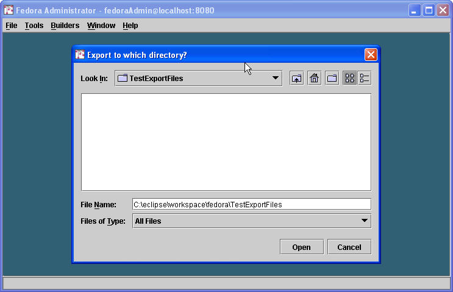

Fedora digital objects can be encoded in different XML formats for ingest and export. In Fedora 2.0, objects can be ingested and exported in either the Fedora Object XML (FOXML) format or the Metadata Encoding and Transmission Standard (METS). Note that Fedora provides an extension of the METS 1.2 schema that adds a few attributes to support Fedora. In upcoming Fedora releases, other XML formats will be accepted for ingest including MPEG21/DIDL and METS 1.3. In each case there will be a profile for what a valid Fedora object looks like in those formats.
For encoding ingest files in FOXML, please refer to the FOXML XML schema and the Introduction to FOXML guide in the Fedora System Documentation. Also look at the sample FOXML ingest file for a model of a typical ingest file using FOXML.
For encoding ingest files in METS, please refer to the METS XML schema (Fedora extension) and also rules for encoding Fedora objects in METS .
The Fedora Administrator client provides a graphical user interface for ingesting objects into a Fedora repository. Behind the scenes, Administrator uses Fedora API-M, and the appropriate SOAP calls are made the the repository to accomplish the ingest. Objects are ingested as XML files.
From Fedora Administrator, select File/Ingest from the menu bar. You have the option to ingest one object from a file, or multiple objects either from a directory or from another Fedora repository.

When ingesting from a file or a directory, you will be presented with a file browsing dialog, as shown below. Select the file or directory you wish to ingest from.

Next, you will be prompted with a dialog box to indicate the XML format of your file or files. In Fedora 2.0 you have two options: FOXML and METS (Fedora Extension). Select the radio button for the appropriate format of your file or files. Note that if you are ingesting multiple files from a directory, all files must be in the same XML format. When you select the OK button your file or files will be ingested into the repository. The Fedora Administrator client makes a call the the ingest operation of API-M. A successful call results in a new digital object in the repository.

The Fedora Administrator client provides a graphical user interface for exporting objects from a Fedora repository. Behind the scenes, Administrator uses Fedora API-M, and the appropriate SOAP calls are made the the repository to accomplish the export. Objects are exported as XML files. The export operation can be used to migrate objects from one Fedora repository to another (i.e. first export, then ingest into another repository). It can also be used to get an XML encoding of a Fedora object out of the repository for other purposes such as archiving in a separate location, dumping the respository to a directory, or transmission of an entire object to an external service.
From Fedora Administrator, select File/Export from the menu bar. You have the option to export one object, or multiple objects by type, where type means one of the three primitive Fedora object types (FedoraObject, Fedora Behavior Definition, or Fedora Behavior Mechanism).

Next, you will presented with a file browsing dialog where you can select the directory that the file will be exported to, as shown below.

After you have selected the destination of the export file, you will be presented with the export options dialog, shown below. In this dialog you must first select the XML format that you would like the digital object to be exported in. In Fedora 2.0 there are two options: FOXML and METS (Fedora extension). Select the radio button for the format you want. Then, you must specify the export "context" which will make sure the export file is prepared appropriately for the purpose it will serve. There are three options:
- migrate: selecting the migrate context will ensure that the export file is encoded in a manner appropriate for migrating an object from one Fedora repository to another. The important feature to note here is that when a Fedora object contains a URL (i.e., in a datastream location) that is relative to the repository in which the object resides, this option will make sure that the URL remains relative in the new repository. Any repository-relative URLs will be encoded in the export file with the special string "fedora.local.server" in place of the actual hostname and port of the repository. When the export file is ingested into another Fedora repository, these URLs will become relative to the hostname and port of the new repository.
- public: selecting the public context will ensure that the export file is encoded in a manner appropriate for processing the digital object outside the context of a Fedora repository. The file will contain callback URLs for all content stored inside the Fedora repository. The assumption is that this file must provide public access URLs for all datastream content, whether it is stored external to the repository or inside the repostory as managed content. For datastream content stored inside the repository, the export file will contain appropriate Fedora dissemination requests (upon API-A-LITE) for obtaining datastream content.
- archive: the archive context is not available in Fedora 2.0. In the future this option will be enabled to produce an export file that is self-contained, meaning that all datastream content is within the export file. The file will serve as a self-contained archive of the digital object. All XML content will be directly inlined within the XML export file. All binary content will be base64-encoded within the export file. There will be no callback URLs for datastream content. This will be a true dump of a digital object to a single file.

When you select the OK button, the digital object(s) will be exported from the repository into files(s) according to the options specified. Note that the digital object still resides inside the repository since the export file is just a copy of the digital object.
The Fedora Administrator client provides a command line utility for ingesting objects into a Fedora repository. Behind the scenes, Administrator uses Fedora API-M, and the appropriate SOAP calls are made the the repository to accomplish the ingest. Objects are ingested as XML files.
The Fedora Administrator client provides a command line utility for exporting objects from a Fedora repository. Behind the scenes, Administrator uses Fedora API-M, and the appropriate SOAP calls are made the the repository to accomplish the export. Objects are export as XML files.